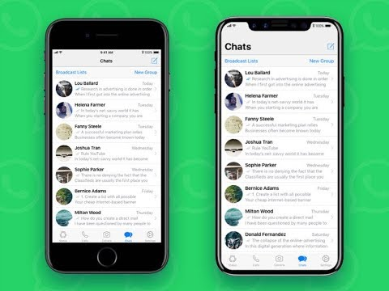

Whatsapp is an alternative email for people in school or work who need a place to communicate with eachother.
Whatsapp is a great for group and direct messsaging, file sharing and third party app integrations such as Google Drive.
Whatsapp is a great way of keeping organised for students or teachers. It means they can contact eachother effiecently and easily whenever necessary to stay on top of things.
Whatsapp is a great way for teachers to find other teachers so they can share their ideas and tips with eachother.
